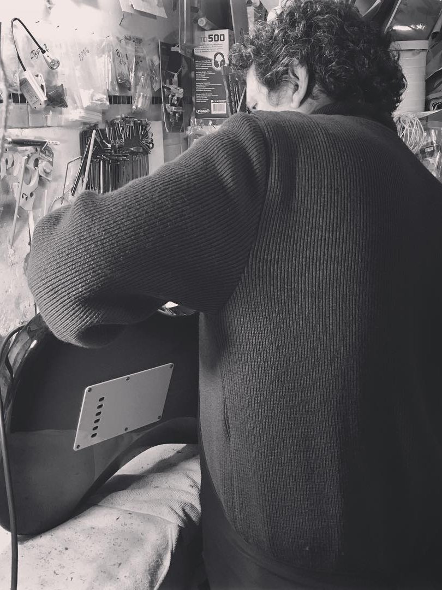
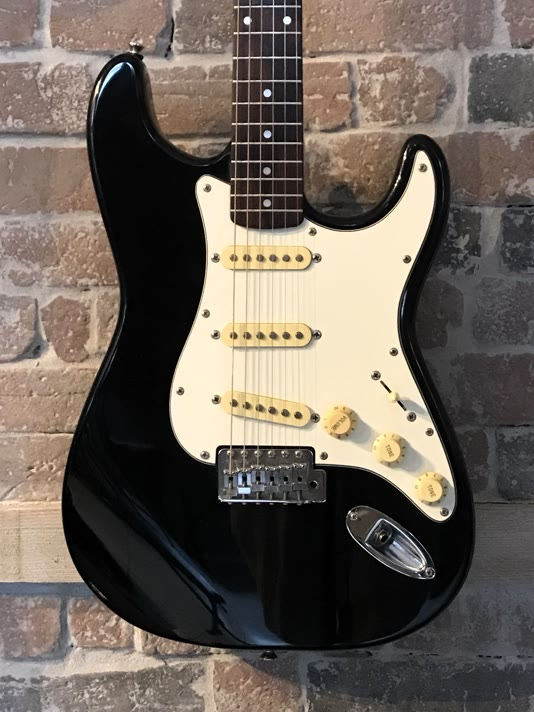
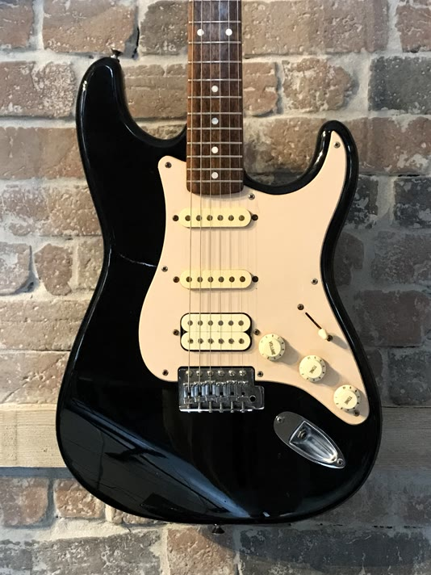
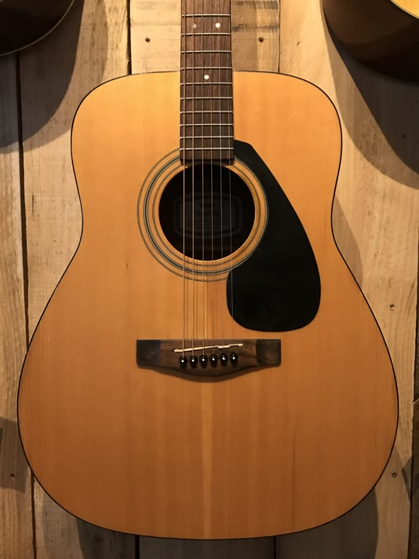
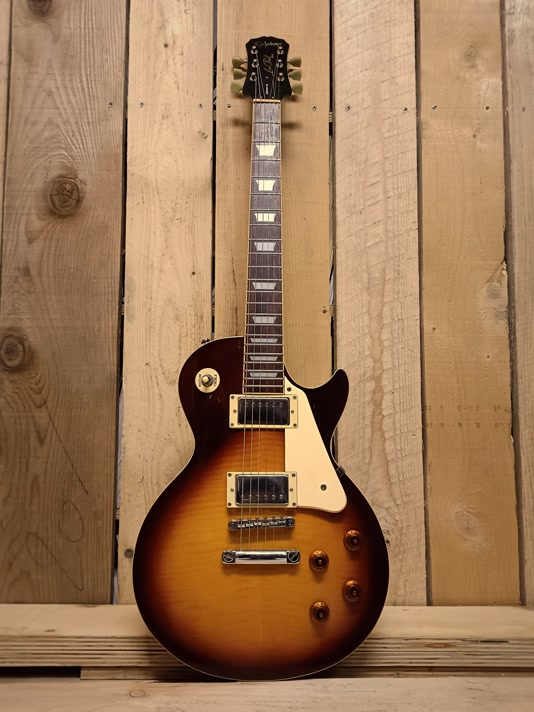

Atelier de lutherie

Rueil Musique vous propose son savoir-faire en lutherie. L'atelier restaure, répare et entretient vos "petites grands-mères" pour leur redonner leur âme d'antan.
Tous les instruments du magasin sont contrôlés et réglés par notre atelier de lutherie avant la vente. L'atelier intervient en priorité sur les instruments achetés à Rueil Musique, et le suivi est fait gracieusement sans limite de temps ! Seul le changement de cordes reste à votre charge.
Notre luthier entretient, répare et restaure les instruments à cordes. Il use de son expertise pour vous offrir un confort de jeu optimal et un réglage personnalisé.
Les devis sont gratuits et se font sur demande selon le type d’intervention et l’état de l’instrument. Les délais peuvent varier en période d’affluence. L'équipe se réserve le droit de refuser d'intervenir sur les instruments neufs ou encore sous garantis hors-magasin, ou si l'instrument est considéré comme trop endommagé.
Contactez-nousL'importance et l'intérêt d'un réglage et d'un entretien
🔧 Que vous soyez simple débutant ou joueur professionnel, le réglage et l'entretien de son instrument est capital pour garantir la meilleure expérience de jeu possible. Et le réglage, ce n'est pas quelque chose d'universel, c'est en fonction des besoins de chacun. Chaque cas est différent, il est personnalisé en fonction de plusieurs facteurs :
- ✔️ Vous jouez principalement des accords en début de manche
- ✔️ Vous jouez exclusivement des arpèges et des solos dans les aigus
- ✔️ Vous avez besoin de cordes souples tout en jouant des accords
- ✔️ Vous jouez avec des accordages particuliers (Open D, Drop B, etc.)
Le réglage n'est pas juste offrir un meilleur confort, c'est donner pleine vie à votre instrument pour maximiser le plaisir de jouer et garantir un bon apprentissage. Un instrument dont le réglage et l'entretien n'ont pas été faits sur mesure peuvent en l'occurence être la cause de :
- ⚙️ Une attaque difficile voire douloureuse sur les cordes
- ⚙️ Des barrés qui exigent beaucoup trop de force
- ⚙️ Des cordes qui frisent (bruits parasites)
- ⚙️ Un instrument qui sonne faux malgré un bon accordage
- ⚙️ Un son amplifié de mauvaise qualité (bruit de fond, buzz et/ou crashs)
- ⚙️ Un déséquilibre sonore entre les cordes
- ⚙️ Une touche peu agréable à jouer
- ⚙️ Un bloc vibrato non-utilisable
- ⚙️ Une espérance de vie de l'instrument réduite, même sur des modèles prestigieux
- ⚙️ Une mauvaise raison d'acheter un nouvel instrument
Tout comme un contrôle technique régulier de sa voiture, il est essentiel de vérifier au fil du temps l'état de son instrument pour le faire vivre le plus longtemps possible, et d'en tirer le meilleur parti. C'est pourquoi nous offrons à nos clients ayant acheté leurs instruments dans notre magasin le réglage et l'entretien gratuitement, et ce à vie.
Demandez conseil à notre luthier Fabien, il saura vous prescrire le réglage le plus optimal en fonction de vous et de vos préférences. Donnez une chance à votre instrument et offrez-vous l'expérience que vous méritez.
Contactez-nousInterventions proposées par l'atelier
- Changement de cordes : guitares, violons, ukuleles, basses électriques, mandolines, etc.
- Réglage complet : manche, action, intonation, bloc vibrato
- Entretien : nettoyage, lustrage, soin de la touche, désoxydation, etc.
- Réparation : recollage de la tête, chevalet, fissure corps & table d'harmonie, changement de mécaniques, etc.
- Électronique : embase, câblage, pose micro, etc.
- Retouche vernis
Occasions ❤️🩹
Martin - D-28 Marquis

Légende acoustique, une guitare Dreadnought puissante, aux bois massifs d'exception. Un son riche et profond, symbole du savoir-faire américain.
Recollage fillet, lustrage, réglage complet et entretien
- Table : Épicea massif
- Manche : Acajou
- Touche : Ébène
- Mécaniques : Vintage
- Chevalet : Ébène
- Éclisses : Palissandre indien massif
- Vernis : Naturel brillant
Yamaha - Pacifica 112J

La Pacifica 112J est une jolie Stratocaster conçue pour les débutants. 2 micros simples et 1 micro double, parfait pour jouer un peu de tout et de découvrir le monde de la guitare électrique !
Désoxydation électro, réglage complet et entretien
- Corps : Aulne
- Manche : Érable
- Touche : Palissandre
- Micros : 2 micros simples, 1 micro double
- Électronique : 1 volume, 1 tone, sélecteur 5 positions
- Mécaniques : Chrome
Squier - Stratocaster (Korean)

Cette Squier est une stratocaster coréenne de 1995 entièrement révisée, spécialement conçue pour les amateurs de guitare électrique.
Désoxydation électro, réglage complet et entretien
- Manche : Érable
- Touche : Palissandre
- Micros : 3 micros simples
- Électronique : 1 volume, 2 tones, sélecteur 5 positions
Art & Lutherie - Ami Cedar Black

Vous voyagez beaucoup et souhaitez jouer en petit comité ? L'Ami Cedar Black est une belle guitare au format parlor au prix abordable, surtout pour du Made in Canada. Rappelant l'époque des musiciens voyageant sur le pouce, ces guitares de format « parlor » privilégient le confort grâce à leur taille réduite. Leur timbre est reconnaissable par un son cristallin avec de légers graves.
Poc léger sur le bas de la table d'harmonie, réglage complet et entretien
- Table : Cèdre massif
- Manche : Érable argenté
- Touche : Palissandre
- Mécaniques : Vintage
- Chevalet : Palissandre
- Fond : Meriser
- Éclisses : Merisier
- Finition : Faded Black
- Vernis : Satiné
Fender - Precision Bass 1979

La légendaire Precision Bass 1979, ou plutôt le plaisir ultime de jouer de la basse électrique. Manche et touche en érable et corps en aulne, un électronique aux contrôles simples mais efficaces, et surtout d'une précision hors-norme.
Reprise complète électro, réglage complet et entretien
- Corps : Aulne
- Manche : Érable
- Touche : Érable
- Micros : 2 micros passifs
- Électronique : 1 volume, 1 tone
Squier - Stratocaster (China - Affinity Series)

La Squier Affinity Series, ou plutôt une stratocaster des années 2000 entrée de gamme pour ceux qui veulent découvrir tranquillement la guitare électrique, parfait pour les petits budgets !
Désoxydation électro, réglage complet et entretien
- Manche : Érable
- Touche : Palissandre
- Micros : 2 micros simples, 1 micro double
- Électronique : 1 volume, 2 tones, sélecteur 5 positions
Yamaha - FG-403MS

Inspiré de cette célèbre guitare jouée par Neil Young, la FG-403MS est une jolie guitare acoustique au format Dreadnought à un prix plus abordable.
Légère fissure sur table d'harmonie, lustrage, réglage complet et entretien
Fender - Classic Series 60's Stratocaster (Mexican) - Sunburst

Guitare d'occasion des années 2010 restaurée par notre luthier, une belle Stratocaster de Fender !
Planimétrie, reprise complet de l'électro (problème de masse responsable du hiss/hum), réglage complet et entretien
- Corps : Frêne chambré
- Touche : Érable
- Micros : 3 micros simples
- Électronique : 1 volume, 2 tones, sélecteur 5 positions
- Mécaniques : ClassicGear
- Chevalet : Acier
Epiphone - Sheraton Natural 90s

Modèle rare aux bois exceptionnels, un jaune naturel mais remarquable !
Pose d'un pickguard, reprise complet de l'électro avec pièces d'origine, réglage complet et entretien
- Corps : Érable
- Table : Érable
- Manche : Acajou
- Touche : Laurier
- Micros : 2 humbuckers
- Électronique : 2 volume, 2 tones, sélecteur 3 positions
- Finition : Brillant
Epiphone - Les Paul Bourbon Burst 90s

La Les Paul standard entrée de gamme, parfaite pour mettre un pied dans l'univers Gibson !
Reprise du filet manche, restauration électronique, réglage complet et entretien
- Corps : Acajou
- Table : Érable
- Manche : Acajou
- Touche : Laurier
- Micros : 2 humbuckers
- Électronique : 2 volume, 2 tones, sélecteur 3 positions
- Finition : Brillant